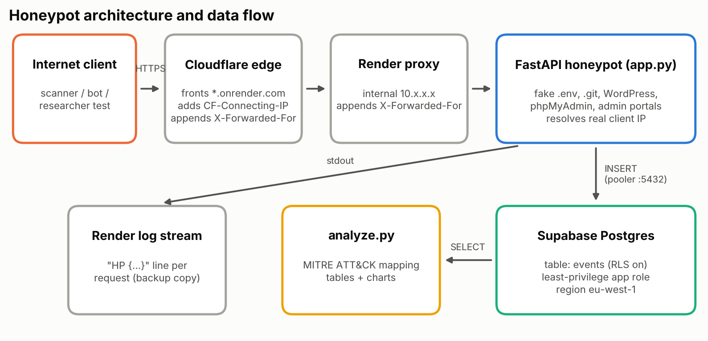
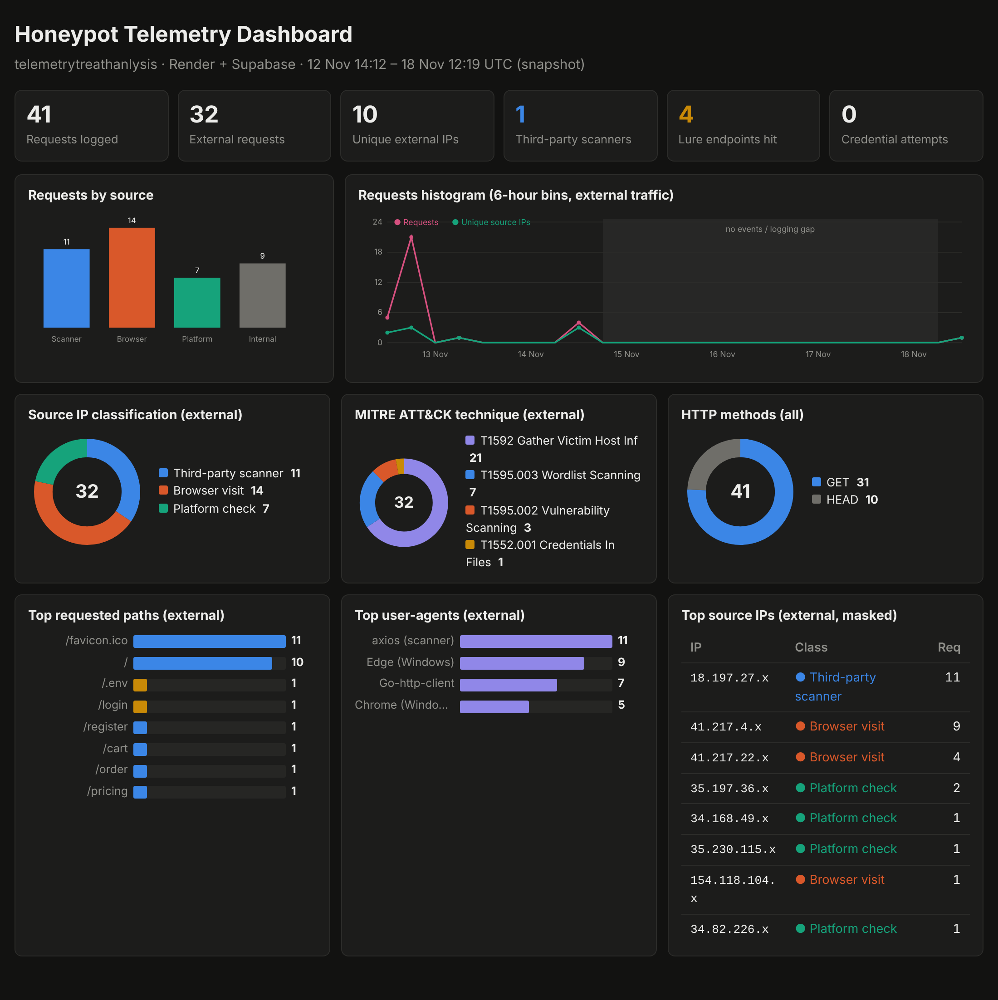
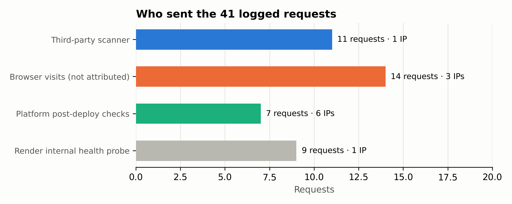
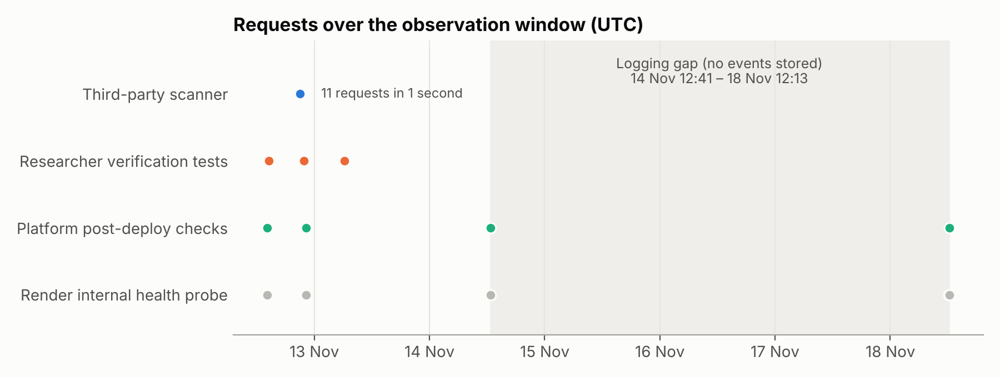
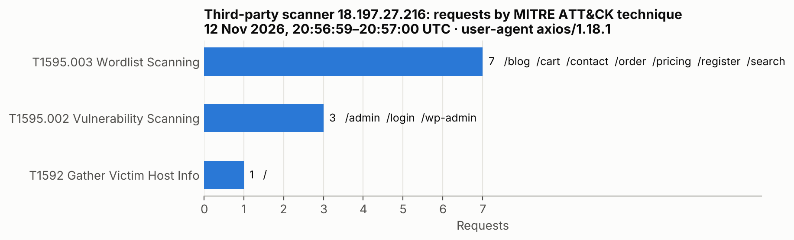

Draft. Items marked [TODO] need your input: screenshots, and confirmation of which IPs were your own test machines.
The project deployed a low-interaction web honeypot to the public Internet to observe what automated clients do when they find a newly published web server. The objectives were to:
.env file, an exposed .git directory, WordPress and phpMyAdmin login pages, and admin portals.
| Component | Technology | Notes |
|---|---|---|
| Honeypot | FastAPI 0.115 + uvicorn | docs, redoc and openapi routes disabled to hide FastAPI fingerprints; --no-server-header, with fake Server: Apache/2.4.41 (Ubuntu) and X-Powered-By: PHP/7.4.3 headers |
| Hosting | Render web service (free plan) | Public URL https://telemetrytreathanlysis-tj0r.onrender.com (an earlier instance ran at https://telemetrytreathanlysis.onrender.com) |
| Storage | Supabase Postgres 17 | events table (see schema.sql); the app connects as a dedicated least-privilege role allowed only SELECT/INSERT on events |
| Keep-alive | UptimeRobot, 5-minute interval | Hits /healthz, which is deliberately not logged so it does not pollute the data |
| Lure endpoint(s) | Imitates | Response returned |
|---|---|---|
*/.env* |
Laravel/Node environment file left in the web root | Fake APP_KEY, DB password and AWS key pair (all fabricated, non-functional) |
/.git/config, /.git/HEAD |
Exposed Git repository | Plausible config pointing at a fictitious acme-corp/internal-portal repo |
/wp-login.php, /wp-admin* |
WordPress login | Login form; any POST returns "Invalid username or password" and the submitted credentials are captured |
*phpmyadmin*, *pma*, *adminer* |
phpMyAdmin / Adminer | Login form; POST returns "Cannot log in to the MySQL server" |
/admin, /administrator, /login, /manager, /console, /cpanel, /boaform, /signin, /user/login |
Generic admin panels and router UIs | "Administration Portal" login form |
*actuator* |
Spring Boot Actuator /env |
JSON listing active profile prod and a masked DB password |
*server-status* |
Apache mod_status |
Fake uptime/access counters |
*.sql, *backup*, *.bak, *.zip, *.tar.gz |
Database dumps and backups | Truncated fake MySQL dump header |
/config.json, /config.php, /config.yml, /wp-config.php.bak |
Leaked application config | JSON with fake DB credentials |
/robots.txt |
robots.txt | Disallows /admin/, /backup/, /.git/, /phpmyadmin/, /internal/ to invite follow-up crawling |
| anything else | Apache default | Apache-styled 404 Not Found page |
Safety: nothing in the application executes, evaluates or forwards attacker input. Request bodies are truncated to 4 KB, and all secrets served are fabricated.
Behind Render, the TCP peer the app sees is a proxy, not the client. client_ip() in app.py therefore trusts sources in this order:
CF-Connecting-IP / True-Client-IP, set by Cloudflare, which fronts every *.onrender.com host.X-Forwarded-For.The raw X-Forwarded-For value is always stored alongside, because a client can pre-fill that header to spoof an address.
Verification. A test request was made from a known machine and compared with the stored row. Example row (event 081ae5d54835, 12 Nov 2026 14:32:15 UTC, GET /.env):
| Field | Value |
|---|---|
ip (resolved) |
41.217.22.x |
xff (raw) |
41.217.22.x, 104.22.76.130, 10.31.219.77 |
| Headers present | cf-connecting-ip, true-client-ip, cf-ipcountry, x-forwarded-for, rndr-id |
The chain reads client → Cloudflare edge (104.22.x.x) → Render internal (10.x.x.x), and the app correctly resolved the left-most public address. [TODO: confirm this matches the IP shown at https://ifconfig.me on your machine at the time, and add a screenshot of the Supabase row.]
Events with ip = 127.0.0.1 come from Render's own in-container health probes (HEAD / with Go-http-client/1.1). This matches the design: no forwarding headers, peer equals loopback.
| Item | Value |
|---|---|
| Repository | jaycash988/telemetrytreathanlysis (GitHub) |
| Platform | Render web service, Python runtime, free plan, region Frankfurt |
| Build / start | pip install -r requirements.txt / uvicorn app:app --host 0.0.0.0 --port $PORT --no-server-header |
| Health check | /healthz (unlogged) |
| Environment variables | DATABASE_URL (Supabase Session pooler URI), EXPORT_TOKEN (secret path for /_export/<token>), MY_IPS (own test IPs; left empty), PYTHON_VERSION=3.11.9 |
| Database | Supabase project telemetrytreathanalysis, region eu-west-1, Postgres 17 |
[TODO screenshots: Render build log, Render service page with URL, Supabase events table, Render logs showing HP {...} lines.]
| Period (UTC) | Instance | Status |
|---|---|---|
| 12 Nov 14:12 → 14 Nov 12:41 | telemetrytreathanlysis.onrender.com |
Logging to Supabase (last stored event 14 Nov 12:41) |
| 14 Nov 12:41 → 18 Nov 12:13 | — | No events stored. The original instance stopped writing to the database, and its replacement (created 16 Nov) failed to start until its DATABASE_URL was configured |
| 18 Nov 12:13 → end of study | telemetrytreathanlysis-tj0r.onrender.com |
Logging to Supabase |
Total span covered: about 142 hours. The effective logging time was shorter, because of the gap above.
All figures exclude the 9 internal Render health probes from 127.0.0.1.
| Metric | Value |
|---|---|
| Total requests logged | 32 |
| Unique source IPs | 10 |
| Credential submissions | 0 |
| Exploit payloads (SQLi, LFI, Log4Shell, command injection) | 0 |
| Requests with tool/scanner user-agent | 18 (axios, Go-http-client) |
Source breakdown. The traffic falls into three groups:
| Group | IPs | Requests | Evidence |
|---|---|---|---|
| Researcher verification tests | 3 (41.217.22.x, 41.217.4.x, 154.118.104.x) |
14 | Desktop Chrome/Edge browsers; referers show manual visits to /, /.env and /healthz. [TODO: confirm these were you] |
| Hosting-platform checks (inferred) | 6 Google Cloud addresses (34.x, 35.x) |
7 | GET / with Go-http-client/2.0, each arriving 1–9 seconds after a new instance started up; consistent with an automated post-deploy reachability check |
| Third-party automated scanner | 1 (18.197.27.216, AWS eu-central-1 range) |
11 | See below |
The third-party scanner. On 12 Nov at 20:56:59–20:57:00 UTC, about 6.7 hours after the first deploy, 18.197.27.216 sent 11 GET requests in about one second with user-agent axios/1.18.1:
/, /login, /register, /cart, /order, /pricing, /contact, /blog, /search, /admin, /wp-admin
The requests carried sentry-trace and baggage headers, which are distributed-tracing headers emitted by a Node.js service instrumented with Sentry. This indicates an automated SaaS crawler or site-fingerprinting service rather than a human. The path list mixes generic e-commerce pages with the two most common admin panels (/admin, /wp-admin), the signature of a lightweight technology/attack-surface profiler. It did not request any of the high-value lures (.env, .git/config, backups) and submitted no credentials.
Figures:




Charts produced by analyze.py across all external traffic (results/charts/mitre.png, paths.png, timeline.png) can go in the appendix.
Geolocation was not available when the charts were generated (ip-api.com unreachable from the analysis environment). Re-running python analyze.py --exclude 127.0.0.1 on a normal Internet connection fills in the country column and charts/countries.png.
| Observed behaviour | Technique | Events | Source |
|---|---|---|---|
Enumeration of common site paths (/login, /register, /cart, /blog, …) |
T1595.003 Active Scanning: Wordlist Scanning | 7 | Scanner |
Probing admin portals (/admin, /wp-admin) |
T1595.002 Active Scanning: Vulnerability Scanning | 2 | Scanner |
Fetching /, /favicon.ico to fingerprint the host |
T1592 Gather Victim Host Information | 21 | Mixed (mostly researcher tests and platform checks) |
Request for /.env |
T1552.001 Unsecured Credentials: Credentials In Files | 1 | Researcher test |
Lures that were never triggered by third parties: credential brute force (T1110), web-shell probing (T1505.003), IoT/router exploitation (T1190), backup hunting.
The main finding is how little unsolicited traffic a honeypot on a Platform-as-a-Service subdomain receives. Studies of honeypots on bare cloud IPs typically record thousands of requests per day. This one received one genuine third-party scanner in about six days. Three properties of the hosting set-up explain the difference:
*.onrender.com with a wildcard certificate, so creating this service never published its hostname to CT logs.Host header never reaches the service. IP-sweeping botnets, which generate most honeypot traffic, are therefore invisible.The one scanner that did arrive behaved like a commercial attack-surface or technology-profiling service. It was quick, broad and shallow, did not follow robots.txt hints, and had no interest in credentials. This is consistent with the reconnaissance stage of ATT&CK (TA0043) rather than initial access.
The reverse-proxy work (section 4) is a positive result: the three-hop chain was correctly unwound, and the design stores the raw header so spoofing can be detected after the fact.
Limitations
Ethics
app.py, analyze.py, schema.sql, render.yaml in this repository.